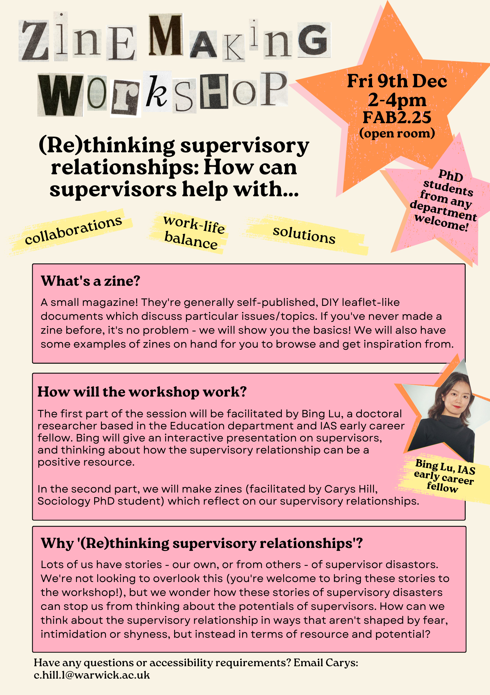
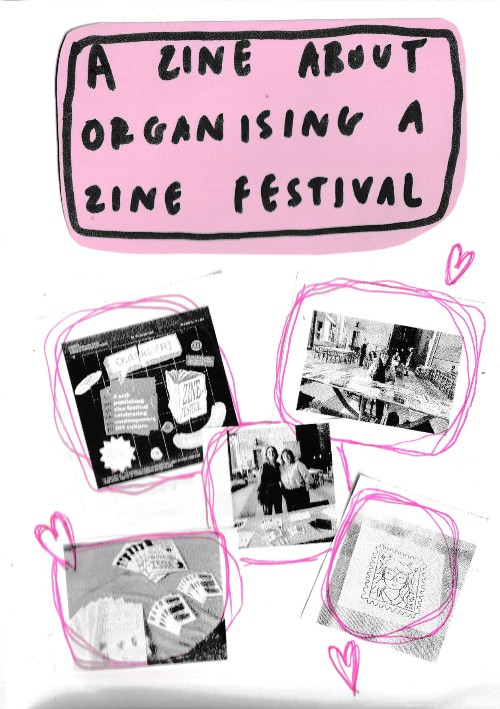

Profile
I am a third year PhD student in the Department of Sociology. My PhD explores negotiations of community and commodity in feminist subscription services – in particular, feminist organisations who provide community spaces in exchange for a monthly subscription fee. I have previously researched body positivity on Instagram, and experiences of online communities with the Anti Diet Riot Club.
I previously studied a BA in Politics and Sociology at the University of Warwick with an intercalated year at ISCTE(University Institute of Lisbon), and an MA in Social and Political Thought and MA in Social Science Research, both at the University of Warwick. In May-June 2024, I was a Visiting Scholar at the Department of Gender Studies, Lund University, Sweden.
Research
My PhD considers the emergence of subscription-based feminist communities through a digital ethnography of three UK-based feminist subscription services which offer private digital community spaces, among other services. Building on scholarship which explores the relationship between contemporary feminism and the digital economy and the ways in which the digital economy is shaping feminist activism, knowledge production and community-building, I ask:
- How do members and creators negotiate and navigate tensions between community and commodity in subscription-based feminist communities?
- What kinds of feminist subjectivities and feminist politics emerge in subscription-based feminist communities?
- What can subscription-based feminist communities tell us about (i) the relationship between feminism, commercialisation and monetisation, and the digital economy, (ii) community-building in a time of economic crisis, including the cost of living crisis, the retreat of government funding for arts, media and culture initiatives, and the concurrent increase in self-funded, crowd-sourced organisations, and (iii) the emergence and popularity of the subscription economy more broadly.
To explore these questions I employ a variety of methods, including discourse analysis of social media content, mailing lists and websites, interviews with community members and organisers, and zine-making-based focus groups with community members.
My PhD is supervised by Dr Maria do Mar Pereira and Dr Cath Lambert.
Teaching
2023/2024
SO116 Sociology of Gender
SO126 Class and Capitalism
Supervision
I currently supervise four student research projects funded by the Social Mobility Research Hub.
Guest Lecturer
"Online Communities, Content Creators and the Subscription Economy: Negotiating Community and Commodity", for MA module, The Sharing Economy and Its Discontents, Kings College London.
I have also provided teaching at secondary schools and sixth forms on topics including gender, feminism, inequality, education, and widening participation.
Conference Presentations
"Being a Feminist in Non-Feminist Spaces: An Effort Towards a Reparative Approach", AtGender Conference 2023: Feminist Pedagogy of/beyond Borders. Kadir Has University, Istanbul. 4th-7th September 2023.
"Body Positivity and the Ambivalent Hold of Contemporary Postfeminist Affects". BSA Emotions Study Group 2023 Symposium: Emotions and Society: Inequalities and Solidarities. Online. 27th-28th June 2023.
"Doing What Instagram Can’t? The Turn to Forum-Based Alternative Social Media and the Affordances of Slow Algorithms – an Ethnography of the Anti Diet Riot Club". Algorithms for Her 2. University of Sheffield, Sheffield. 24rd-24th March 2023.
"Doing What Instagram Can’t? An (Online) Ethnography of the Anti Diet Riot Club". ECREA Pre-Conference Workshop: The Work-in-Progress in Social Media Research. Online. 12th October 2022.
"Doing What Instagram Can’t? A Study of the Anti Diet Riot Club". CIM Student Conference 2022: Digital in a Post-Pandemic World. University of Warwick. 30th June 2022.
"Affirmation as a Temporary Home: The Affective Temporalities of Body Positivity on Instagram". 11th European Feminist Research Conference. University of Milano-Bicocca, Milan. 15th-18th June 2022.
Awards
Economic and Social Research Council PhD Studentship (2021-2025)
The John Rex Prize for best overall performance across all MA and MSc programmes in the Department of Sociology at the University of Warwick, (2021/2022)
University of Warwick Sociology Departmental MA Scholarship for outstanding academic performance (2021/2022)
The Politics and Sociology Prize for best overall performance in the degree of Politics and Sociology at the University of Warwick (2019/2020)
Selected Activities
Events and Research Assistant for the Centre for the Study of Women and Gender (February 2022 - present)
Widening Participation Student Advisory Group Member (October 2022 - present)
Rethinking Supervisory Relationships: A Zine Workshop, co-organised with Bing Lu (December 2022)
Co-organiser of outside(R) Zine Festival (October 2022)
Research Assistant for HOME TRUTHS, a multi-screen film installation and community listening project in collaboration with Dr Cath Lambert and Vincent Dance Theatre (October 2021 - July 2022)
Curator and facilitator, LOSER ZINES workshop at Brum Zine Fest (July 2022)
Curator and facilitator, Outside(R): Feminism in the Community Zine Workshop at The Pod Cafe (June 2022)
Member of Athena Swan Self-Assessment Team for Department of Sociology, University of Warwick (2021/2022)

PhD Student
Supervisors: Cath Lambert and Maria do Mar Pereira
Email: c.hill.1@warwick.ac.ukTwitter: @carysshill 